来源：https://b16xnqwk20.feishu.cn/docx/XXOodPIP3o2KROxOCtEcKPH9nL2
全文5500字
推荐用时：6min
首先很感谢大家支持，有机会能在生财分享，然后之前在大航海里面分享过三次。这次终于有时间，在星球里面给大家仔细分享。
今天给大家分享下，我们关于【私域30天卖课60万】的实操经验。
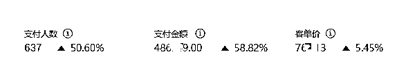
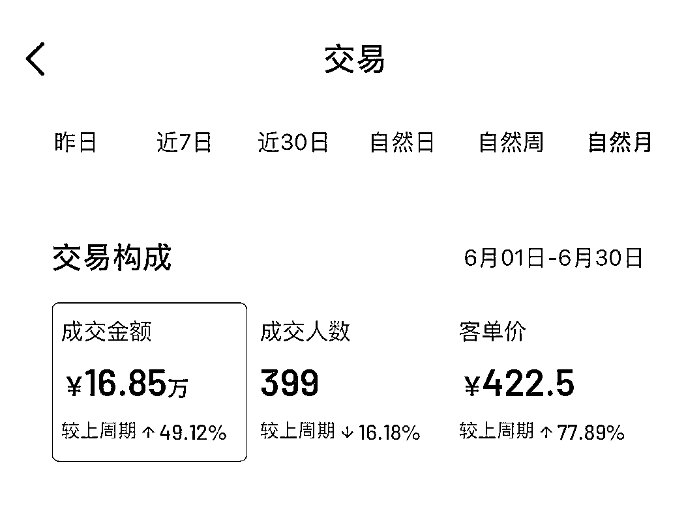
我是宋老师（账号叫宋老师帮你做课），很多抖音、小红书做知识付费的小伙伴可能知道我，简短的自我介绍一下，便于大家快速知道我的价值
我的四个标签：
1.目前自媒体头部的做课&卖课博主→流量能力
2.原来的新东方总监，最高记录同步管理80w学生社群→教学能力
3.6000多位知识博主的老师→成绩
4.很多百万博主背后做课的男人
今天我分享的主题主要有以下这么几个版块：
1.什么是私域？知识博主如何搭建？
2.我们私域转化能保证30%转化率的核心秘密
3.私域的神器，辅助你超神的工具
4.目前常见的私域玩法
咱们很多圈友都再熟悉不过“私域”这个词了
先给私域下个定义，长期、持久、可复购、高变现的微信生态。所有做抖音、小红书、视频号的博主，赚大钱的一定都在私域。
私域的好处
“不用直播”，
“沉淀铁粉”，
“不用浪费大量时间”
“自动成交”
“高客单的温泉”
“做好维护，多次复购”
公域如果是空气，鱼龙混杂；私域一定是氧气，不可替代。
1，跟同行差距越拉越大
同行10w粉公域流量，私域只有2千学员
而你有10w粉公域，私域沉淀2w
想想这个差距，即便停更，你也不会有太大影响。但是他们一旦停更，就意味着散伙了
2，复购的价值=私域的价值
我们每两月发售一门新课，就可以激活一波老粉，自动成单至少200单，带来10w+利润
3，5w的好友威力有多大呢？
我的一个学员叫珍爱姐，是做洗衣店运营--很细分的领域
她是我做抖音最早教的前3个学员，没有特殊的头衔，只是一位普通的宝妈
做抖音一年时间，只做私域，9000粉丝，一个月利润在十几万，远超百万大博主。
原因是用户和曹老师的粘性强了，复购率高了，还能有老带新
不要担心细分领域不赚钱，重要的是怎么运营
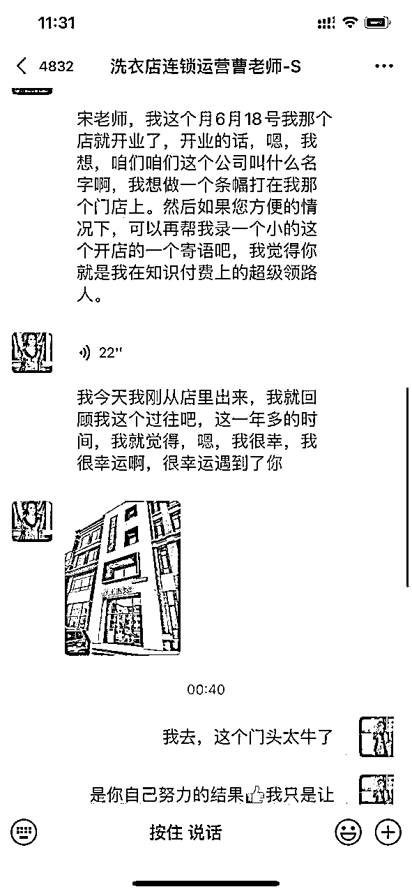
我在做课卖课赛道做了一年，从小白到头部，私域功不可没。30天私域卖课50w，一年总变现近8位数。
公域赚快钱，私域赚大钱
公域产品的核心是建立信任，私域产品的核心是卖出利润。
所以公域私域之间的联动就会出现大量的钱
假设你的引流课399，一个月抖音+小红书会卖出300多单，私域还会卖200单，这样引流课收入是20w
中间你升级了一个利润课【2499】，这个利润课是从引流课转化的，转化率大概30%-40%，
所以会出37w
最后你可能还有高端的1v1服务，一个1w，出现10单左右，
总计10w
综合算一下，你的公域每个月收入=300×399=12w
私域=200×399+370000（升单产品）+100000（VIP产品）=55w
所以私域会是公域赚钱的5倍
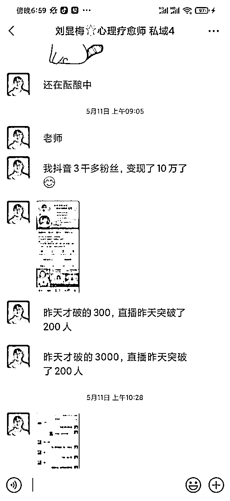
我们每个月有一个好的习惯，就是测算自己的月收入，定当月的运营动作，有目标就好搞事情了
下面这张表是份《卖课收入预判表》，可以看一下，具体里面有很多的公式算法，有需要的可以找我安排，就不给大家一一拆解了。
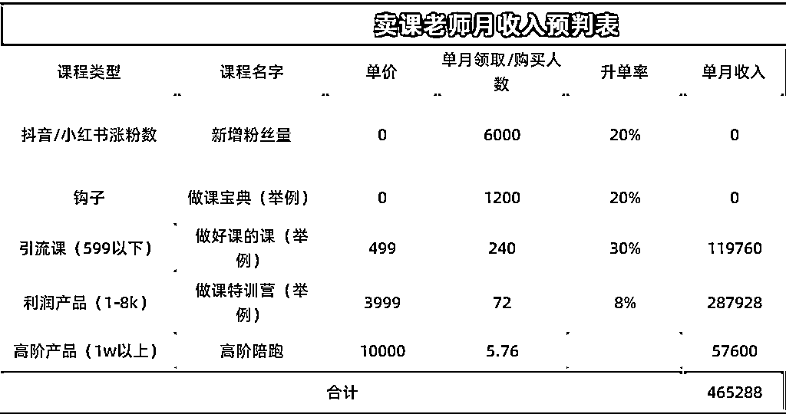
加粉，加粉，顾名思义加到粉丝
我们常见的两种，一种是每日被动引流，通过小红书、抖音的粉丝群，抖音号，评论区引流
他们自动加到微信，我的号每天会有100+人被动加好友。
这种方法得益于钩子，也就是免费领资料，这种也是效率最高的加粉。但是一天一个号被动不要超过100人，减少被封的可能。可以设置渠道码，多个账号运营
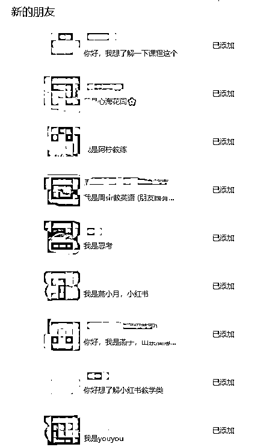
另一种就是，抖音、小红书的线索，我们在短视频下钩子，他们想免费领取资料，我们每个月这种线索几千条。
他们在后台留了信息，需要我们主动的加好友
既然是你主动加粉丝的话，就一定有可能会出现粉丝不通过好友的情况。
所以怎么样才能粉丝快速让他通过好友，
你要在申请好友的口令上下些功夫，一定要写的完整。
比如说：我叫宋老师帮你做课，那如果我在加好友的时候只写宋老师，那么可能通过率都比较低。
所以记住，当你加别人好友的时候，你的申请话术一定要保持跟你的抖音的名字一致。同时，最好能配上一些利益点，比方说：我是宋老师帮你做课，给你发做课宝典。
最好不要写成宋老师（不听语音），这种会有和粉丝有摩擦。明明短视频平易近人，但微信离我很远的感觉。
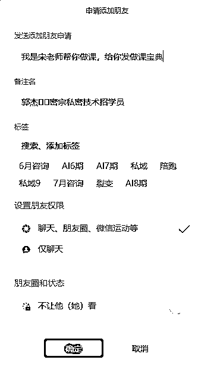
很多老师的痛点在于把好友加到微信之后不会聊天。不会做成交，甚至都不会开启话题
有老师加到微信，发2-3个资料
有老师加到微信，直接发自我介绍
还有老师加到微信，也不说话，等着对方来问
有利有弊，但对于想组团队卖课，想更高效卖课。这些做法都会浪费大量粉丝资源
这种其实你要拥一套【破冰话术模板】的话，
其实这种破冰的问题就迎刃而解了。
我们现在破冰聊天的逻辑是按照以下几个步骤↓
这个板块价值连城，也是我们转化的核心秘密，需要的可以收藏。
第一步--建立信任。
破冰的自我介绍稍微短一些，说自己的核心标签就可以，少即是多
他们都是从各大平台加到你的，可能看大号加微，可能从几十个粉丝的加微
所以人设还是要包装的
我是宋老师，全网最大知识付费做课卖课博主，头部教育公司总监
第二步---给福利。
这也是很多老师在做的，他们想领资料加到你，你自然要给他们资料
资料还有个小技巧，干湿结合，要把你的产品放到文件中，文件也要有人设部分，增加你的个人背书信任
很多同行，把我的宝典拿走当模板。模板就是生产力，既然好用，大家就要共享，但是请礼貌拿
收到你的礼物之后，他会有”愧疚之心”，之后你问他问题，也会回复你，增加一次回复率
第三句话---我们会跟一句问句，让他能跟我们进行回复。
比方说我会问您做什么课程or你直播卖课还是私域卖课？
抛出一个很具体的问题，他一般都会答。要么是选择题，要么是容易回复的问题
这里有两个小技巧：
1.如果你把这个问题的话用语音去说，可能建立的信任度会更高，声音具有穿透性
2.这个问题要问的有交流感和自然感，不要像机器人，简短自然最好
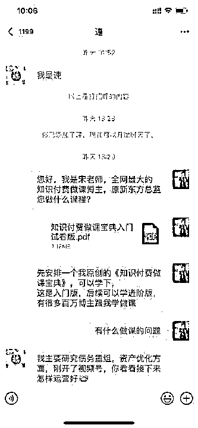
一般情况下，当信任产生后，推进卖课的方式有几种：
第一种，向他提问
第二种，回答他问题
第三种，描绘愿景
第一种，向他提问
因为你有不同的产品，他们也有不同的需求。假如他有课程都买过几百单了，我还卖他《做课》，这个逻辑不通。他不会卖单，你也浪费时间
所以要抛3-4个问题，找到用户痛点，掌握他们的背景
第二种，回答他问题
最常见的老师反馈就是，终于加到微信了，不停的和粉丝聊天，甚至打电话半小时
你要是都帮他解决了，他还能付费吗？
前期我卖课碰到最大的壁垒就是，加到高意向的客户，就打电话。打了三天，最后跑了
给我最大的惊醒，就是不付费学不会，答案不能全盘托出
给个小技巧，可以告诉他你需要咨询或者是买课程，课程里面会有等等。
第三种，描绘愿景
卖课的宣传物料一定要全
比方说，学员案例【可以做一个H5】http://s.xlb-growth.com/0Sfcm
课程的详情页、好评截图、试听课
一对一销售的时候，往往要么是卖愿景要么是卖痛点
要让他们看到这个行业是蓝海，是能有极大的收获，同时前辈已经成功了
这是一个销售的常见路径，还有很多话术的模板，有想法的老师可以找我讨论
卖课路径重在打磨，只有多聊才能打磨出适合你的
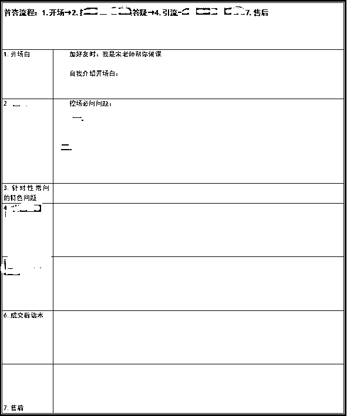
优化一个环节，转化率提升50%，多卖课10w
这是一个很多老师容易忽略的神器
会用的老师，私域运营效果翻倍；不会用的老师，可能是一塌糊涂
我的一个5千粉的微信号，前几天测僵尸粉，只有30个。得益于微信标签的管理
一个5千粉的微信，标签有20个，最大的好处就是发朋友圈的时候，做到精细化的运营
一个开营倒计时的朋友圈，对一个已经买过课的老师，已经没有意义了，那我发圈的时候，就屏蔽掉，不做过多的打扰了
买过一个课，但是没有买过另一个课，又需要屏蔽，只要打好标签，一天发10个朋友圈，都不会有问题
但是一个日常生活的发圈，就不需要屏蔽了
标签简单分类
先按照意向分，我常用的abcs
s--对应高客单，深度服务
a--对应引流课学员，社群服务
b--对应高意向，但是因某种原因没成，后期有活动可以触达
c--对应低意向，白嫖党居多
还有标签的分类，就是按照课程分，第一期学员、第二期学员、
人多之后做融合做课学员、私域学员。统一划分之后，发朋友圈选一个就可以，不至于每期都点一下
还有分类，按照渠道划分，他是直接公域卖课的，还是小红书咨询的，还是朋友转介绍的，各个渠道的粉丝属性是不同的。对应的聊天方式，也是有区别的。
当你的标签打的越来越细的时候，对于这个用户的管理来讲也是越来越清晰了
无论后面是您去管理这个好友号还是您的小伙伴帮您去打理，其实都有一个明确的标签的储存。
所以标签这件事情啊是我们现在管理过程中特别注重的一件事情
所以每一个新粉的标签都会严格要求打，
这个事情重在坚持，如果你做了一段时间之后放弃了又继续做
那标签系统就混乱了，
所以在最初一定要坚持打标签，坚持给每一个用户去做备注，这样的话方便你日后粉丝量大了，私域的体量大了，还能灵活管理，
这就相对来说比较方便了。
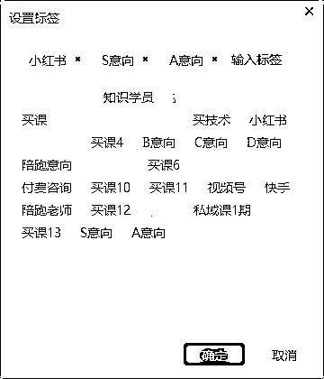
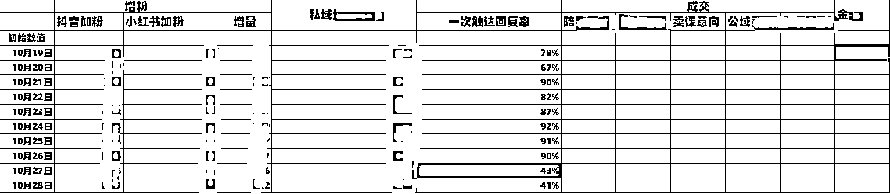
首先每天我们工作群会进行汇报，大概都是这种形式。
对于私域管理，我会抓核心的几个数据，比如当日加粉数，一次回复率以及当日成交额
我们通过这个数据表，可以看到我们最近这天的完成情况，包括一些私域引流数据，转化数据，
对于私域跟盯来说的话，大家要养好一个数据留存的意识，每个月至少要给自己定私域引流的目标，比方说你一个月至少加1000个好友。
那么你到月底的时候就要看自己有没有达标，
同时，如果你有精力的话，最好能够监控自己每一天的，这样的话才能做到“过程可控”，如果你自己没有精力，可以安排你的助手或者安排你的员工去做。
在完成监控之后，就要稳步的放大业务体量。
假如说一转率稳定了，一个月最多卖200单。就要从新品下手了，新品再卖200单，才能放大利润
如果没有稳定，就要复盘当日的动作，当月的节奏，确保最高效的运营。
sop=生产线
sop=员工手册
sop=印钞机
sop是你与同行的护城河
我们运营私域一定是为了系统化的运营流转，而不是每天只盯着现有的粉丝。
当你把一对一私域转化的流程，一对一成交高客单的流程，训练营的流程，高客单陪跑的交付流程
都整理成一套SOP，遇到问题的时候check下，优化下。
这些都是有模板的，你也可以用的，我都做了整理，可以安排
以上的各种表格、标签的活用，都是基于sop，一旦流程化了，团队其他的小伙伴可以直接套用，节省大量的成本
结果就是进步，突破
所以一个sop是公司成长的关键，我们自己也是做了大量的sop，拿来即用。它是可复制的，是任何老师都可以用的
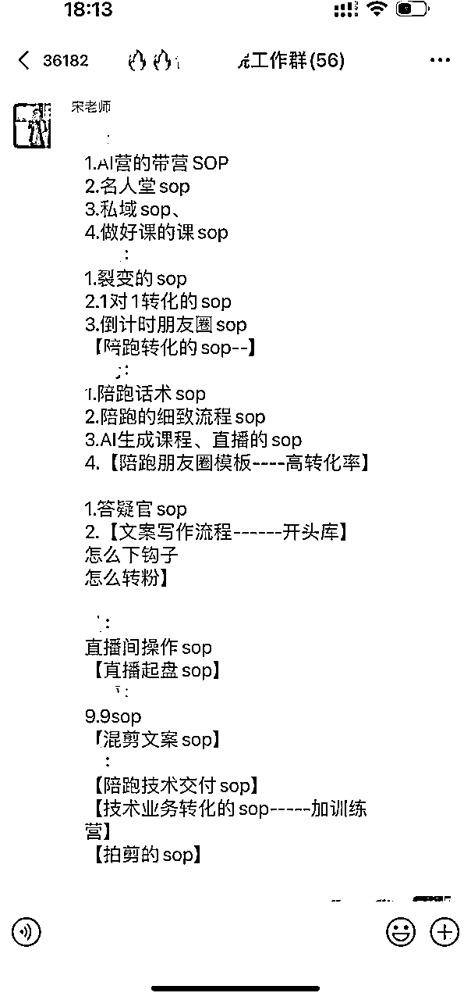
写这篇分享同样也是sop，这个文档沉淀下来，以后还可以多次更新，补充，没准哪天又可以写一本书了
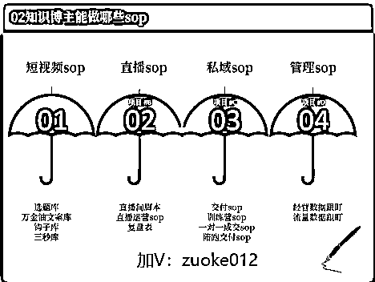
如果你要做私域卖课的话，我建议大家一定要做一套比较完备的收钱体系。
如果在群转或者说在一对一转化的过程中，您收钱的时候出现了问题，那么可能大概率这个卖课就失败了。
我们在最开始经常出现一些风险提示，就因为收钱频次过高，一天卖十几单，群转可能几十单
所以呢后面对这个事情特别在乎
我现在掌握了一套逻辑，收大单一定要走对公，这样的话，合规合法，风险减少到最小，而且很多老师有开票的需求，不会扯皮
或者您还可以去开微信的商务号，支付宝也一样。
或者一种模式，就是用小程序，比较常见的小鹅通、荔枝微课、千聊，卖课直接让他们链接付费就可以
我们目前的看课工具交付一般是两个，一个是学浪，一个小鹅通。
学浪一般都是公域直接短视频买课，或者前期冲销量，还会有设置优惠券，部分老师低价购买
销量好，就会带动销量，相互促进的过程。我们还有一套优惠券玩法的教学，有需要的可以链接领取
小鹅通大部分做私域的老师都会用了，直播，卖课还不错。就是价格偏高，前期对卖课老师不友好，而且最近事变多了，收流量费，劝退了一部分老师
但它的交付还是做的比较好的，包括服务质量还可以，没有出现太多的差评。
前期卖课，也可以试试千聊、荔枝微课，或者让学员去学浪拍课，唯一的阻碍就是，跳转平台，可能就会流失部分学员，他们不想下载就尴尬了。
很多老师担心私域的量一旦大了，会不会服务起来比较困难，其实有一些提效工具能够帮你快速的去做交付和服务
比方说我们现在所用的wetool，飞书，石墨，客服回复标准化工具，还有很多提效的群、私域的运营工具。平时会看到群友发工具，也会试用，大家可以私下再找我探讨
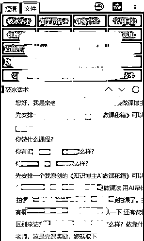
想运营好私域，朋友圈不可少，朋友圈是私域运营的命脉，左膀右臂
咱们也有很多圈友是单纯靠朋友圈年入千万的，大家多学习，相互交流，也欢迎来看我的发圈
下面的这条朋友圈，刚发一小时，就有3个粉丝直接搬走了😂
我还搞了一份朋友圈的模板，偷懒的老师也可以直接用
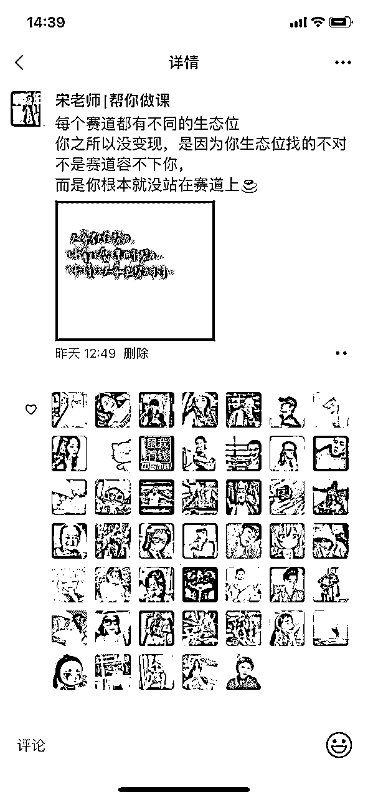
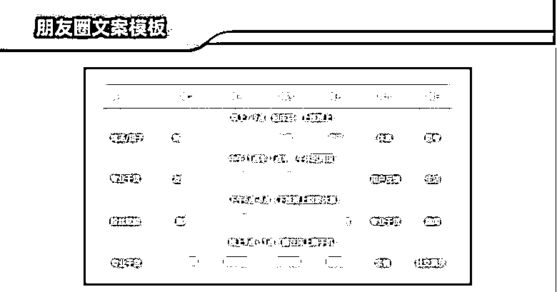
常见的1元课、9.9的公开课，或者免费进群直播。
有几百几千私域的老师一定要做，这是我的一个学员，一场公开课就变现10w，何乐而不为
我自己每个月也会开几期公开课，好处就是，快速批量的触达，筛选高意向的人，做群转或者直播转化
活动结束，群还在，后续有活动还能激活，做储备
真诚的建议，每一个老师都要做，后续有机会我还会分享，【公益群一场变现10w的玩法】
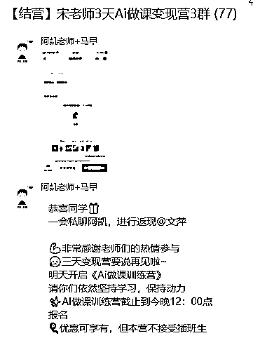
最常见的免费送书活动，成本相对较低，但是威力不容小觑
一场裂变活动，涨粉1000，粉丝相对公域精准，还能有30%的转化升单
升单引流课，再有20%升单利润课，又是大几万入账，都可以搞起来
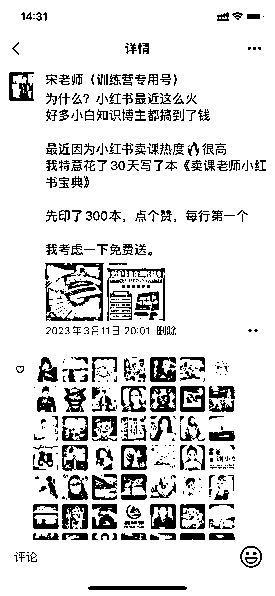
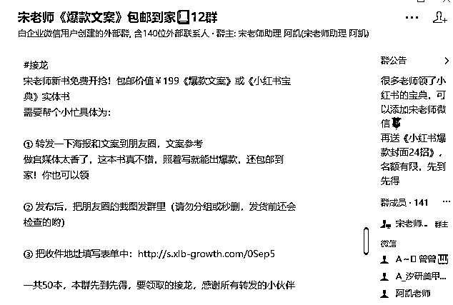
也就是老学员推荐朋友买课，给老学员礼物，或者直接返现，很多博主都在做分销，也就是老带新活动。要么寄礼物，要么分销返现，有时候钱就是最大的催化剂
我的学员老带新，我都会邮寄【宋老师知识变现百万礼盒】作为回报
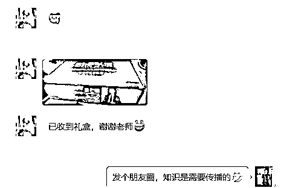
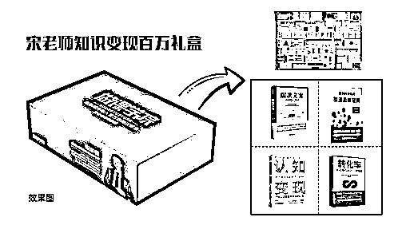
很多老师都能在各大社群相遇，一方面资源多，另一方面可以带给我们的资源也多，互惠互利。
之前参加过生财的分享，红蚁的分享等等，每次也会有几百好友链接。还可以与各大私域大佬视频号连麦，之前和古也美术的操盘手--鄃发总连麦，都会有几百好友链接
也欢迎各位大佬，来我的【做课学院】分享，互惠互利
好了，今天的分享就到这，无论你是企业老板还是个人博主，其实我觉得知识付费都是一门极低成本，极高收入的好事，这个行业的利润在75%以上，老板可以做课程，输出你的产品或者管理思维，用课来征服合作伙伴
个人博主可以做课程增加收入，提高粉丝粘性和后端合作
欢迎大家有知识付费问题找我讨论。
未来公域竞争越发激烈，但做私域的人会越来越多，试想一下当你的私域有10w粉丝，20年都会吃喝不愁。
同样是社交名片，动态的会比静态的前景更大。
希望大家，2023生财有术，私域生财，感谢看到这的每一位老师
我是宋老师，23年帮助500位老师卖课50w，欢迎和我一起私域生财！